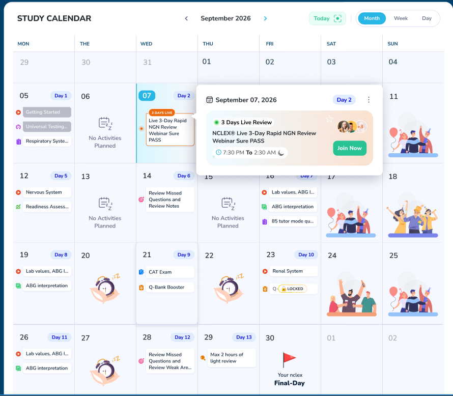
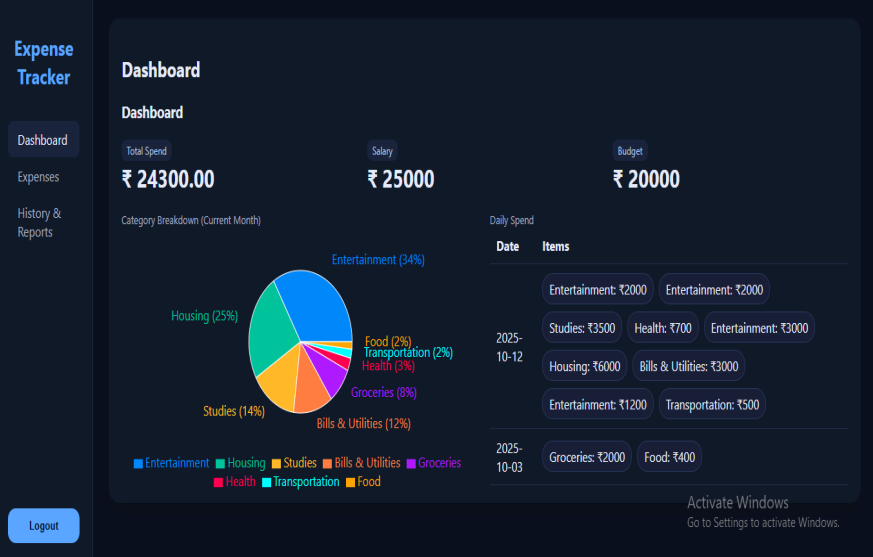

const developer = {
name: "Santhosh K",
role: "Backend Developer",
tools: ["FastAPI", "Spring Boot",
"Claude Code"],
passion: "Building systems that
scale and automating
everything else"
};
About Me
I'm a backend developer who just finished my MCA at KGISL Institute, Coimbatore. During my two internships, I got to work on real products — a medical education platform used by 1.04M+ nursing and medical students, and a manufacturing ERP system I designed and built solo, end-to-end, from scratch.
Along with backend, I've automated some of the repetitive tasks by using Claude Code hooks, skills, sub-agents, and MCP — speeding up development time while keeping the code quality intact.
// Backend systems that scale · AI workflows that automate the boring parts
Location:Coimbatore, India
Degree:MCA, KGISL Institute
Focus:Backend & AI Automation
Certs:11 Anthropic + 4 Industry
Experience
Software Developer Intern
KodeAstraMay 2026 – Present
Built an end-to-end AI-driven development pipeline — covering branch creation, documentation, implementation, review, testing, and deployment — that I use to ship my own feature work with Claude Code sub-agents, hooks, and skills.
Shipped two backend features for Archer Review, a medical education platform serving 1.04M+ students, building 10 API routes that power its exam scheduling and grading workflows.
Independently restored Planibble, a broken full-stack fitness app, to a fully functional state within one month — fixing 15+ critical bugs across frontend and backend with guidance from senior engineers.
How the Pipeline Works
A new task creates its own feature branch and ingests the requirements. For a new module, a sub-agent writes the PRD/FRD/NFR docs; for legacy code that has none, it reverse-engineers them from what's already there.
Implementation runs under safety hooks that block dangerous shell commands and auto-format every file with Prettier. Once code is written, a Requirement Compliance sub-agent checks it against the actual documented business logic, not just syntax.
If unit tests fail, the pipeline debugs and patches the code itself until they pass, then a Playwright MCP integration runs full end-to-end browser tests to catch UI regressions.
Once verified, it writes the commit, pushes the branch, and opens a PR through the GitHub MCP. While CI, CodeRabbit, and a secondary AI reviewer check the PR, the pipeline watches for failures, pushes fixes, and re-verifies until everything's green — then merges and deletes the branch.
One piece I'm proud of: critical or destructive actions don't run silently. They push an approval request to my phone through ntfy, so I can review and approve or reject a step from wherever I am, not just from my desk.
FastAPIPythonClaude CodeSub-AgentsCI/CDntfy
Software Developer Intern
Ash7HubDec 2025 – Mar 2026
Solely designed and built the backend for FlowCRM, a manufacturing ERP platform — architecting 131 REST API endpoints across 14 modules with FastAPI, covering the complete order lifecycle from enquiry to invoicing.
Implemented complex workflow logic including multi-level quality inspection sign-offs and Razorpay payment reconciliation, validated through 549 automated backend tests.
FastAPIPythonPostgreSQLRazorpayPytest
Projects
Archer Review — Medical Education Platform
KodeAstra · FastAPI
1.04M+ StudentsDeloitte Fast 500Inc 5000
Archer Review is a medical education platform ranked among Deloitte's Technology Fast 500 and Inc 5000, serving 1.04M+ students preparing for nursing and medical board exams. I built two backend features from scratch, shipping 10 API routes that power the platform's exam scheduling and grading workflows.
Study Calendar

The Study Calendar feature, live on Archer Review
Students pick an exam date up to six months out — that's the max plan length the client supported. The curriculum for every plan length was already sitting in the database: the client had pre-mapped exactly which videos, live lectures, subject tests, and assessments a student should cover for a 1-month plan versus a 6-month one, IDs and all.
My part was the scheduling logic. Students set their study hours per day (a full day is 6 hours, split into sessions of at least 2 hours each), plus rest days and holidays. I fill each session with content in the exact order the client specified, and content doesn't always fit cleanly — a 3-hour video against 2+2+2-hour sessions gets 2 hours in the first session and spills its last hour into the second, and whatever time is left over in that session gets filled with a test or assessment instead of sitting empty. Students mark each piece as completed as they go, and I designed the underlying schema from scratch to support it.
Educator Grading
Different institutions on Archer Review grade differently — an 80% might be an A under one institution's scheme, while another doesn't call it an A until 90%. I stored each educator's grade boundaries and used them to work out and display the right grade against a student's score, so the same raw test score can show up as a different letter grade depending on which institution the student belongs to.
Planibble's core idea is an AI-generated workout plan — the client had a set of rules hosted in n8n that pick exercises based on where you're training (a full gym vs. working out from home), what equipment you actually have, and any strain or injury you've reported. None of that mattered when the codebase landed on my desk, because it was broken at almost every step before it ever reached that logic.
The workout plan wasn't generating at all — the API call was failing because of a malformed payload, so I traced and fixed the data going out before the request ever reached the endpoint. Profile setup was broken next: the save button simply wasn't calling the profile API, which mattered because workout generation depends entirely on a completed profile. And once a workout was actually completed, it wasn't showing up in the history tab — the complete-workout API wasn't writing a row into the history table, so I fixed that insert. Alongside those three, there was a long tail of smaller UI bugs — unresponsive buttons, broken navigation states — that I worked through the same way.
I used Claude Code throughout to speed up tracing root causes across a codebase I hadn't written, pointing it at specific failing flows rather than asking it to fix things blind. The app was restored to a fully functional state within a month, and is now with the team and client for next steps.
React JSFlutterNode.jsPostgreSQLClaude Code
FlowCRM — Manufacturing ERP Platform
Ash7Hub · FastAPI · PostgreSQL · Razorpay · Brevo
131 API Endpoints14 Modules549 Automated Tests
Built end-to-end, solo, from a blank repo — not a live production system yet, but a complete 14-module manufacturing ERP architected single-handedly as the sole backend developer, with 131 REST API endpoints covering the order lifecycle from enquiry, quotation, and purchase order through production, inspection, and invoicing.
The Job Card & Quality Sign-Off Chain
The Job Card doesn't have a single status field — its status is derived from the Operation's status, which is itself derived from the Quality Sign-off outcome, and every sign-off attempt (pass, rework, or reject) gets appended to a rework-history table so the full audit trail is reconstructable, which is an ISO 9001 traceability requirement. Operation type changes what validation applies too: Machining needs a machine ID, Welding needs a whole nested set of welding details, and if PWHT (post-weld heat treatment) is flagged on top of that, it conditionally requires its own details filled in — a three-level conditional chain that re-runs on every mutation. On top of that, explicit transition rules block illegal status jumps, like marking an operation Complete without it ever going through sign-off.
Final Inspection — the largest file in the codebase
This module is less a state machine and more a data-relationship problem: it auto-populates a document completeness checklist by reaching across four other modules — GRN's mill certificates, Incoming Inspection's PMI/NABL results, Internal Inspection reports, and the Job Card — and has to tell "genuinely missing" apart from "not applicable" for each one, since a missing PMI result is fine (it's optional) but a missing material test certificate isn't. On top of that sits a conditional customer-approval gate: the overall result can only pass when approval is granted, but only when approval is actually required in the first place.
Order Register — keeping 14 modules honest
Every downstream module pushes its stage updates into the Order Register through an auto-trigger engine, and the rules that matter get enforced in two places on purpose — "you can't close an order until its invoice is fully paid" is checked both at the invoice's own trigger point and again inside the stage-update logic itself, so there's no direct API path that can skip it.
Razorpay — the webhook contract, not a payment processor
The interesting part wasn't calling Razorpay's API, it was trusting what comes back from it. The webhook endpoint has no auth dependency — Razorpay calls it directly — so trust comes entirely from verifying its HMAC signature before the payload is ever parsed; an invalid signature gets rejected outright. It's also idempotent: since Razorpay retries webhook delivery at least once, I check whether the payment link is already marked paid before applying it again. All 8 payment modes (UPI, cards, net banking, bank transfer, cheque, cash, and Razorpay online) flow through one shared function that recomputes what's paid and what's still owed, so manual and online payments never diverge into separate logic. To be precise about scope: this is a payment-links integration with signature verification and idempotency, not a custom payment processor — retry handling on failed deliveries is Razorpay's job, not something I built.
A few architectural calls I'd defend
Business logic lives only in the service layer, never in a router or a raw query — which is what let the invoice-before-close rule above be enforced in exactly one place per concern, twice by design rather than by accident. One shared function generates every module's document number (a calendar-year-scoped sequence, plus a separate financial-year variant for invoices), reused across 12+ document types instead of reimplemented per module. Razorpay's key, the webhook secret, and the Brevo API key all go through the same Fernet-based encryption helper and are never returned to the frontend. For the two jobs that only need to run once a day, I used a plain in-process async loop instead of pulling in Celery or APScheduler — a deliberate call to not add a dependency for something that simple.
Brevo handles account-lifecycle email only — staff invites, password resets — not order or quotation notifications, which are still sent manually by staff in this first version. The whole system was built module-by-module against a Backend → Web → Full-Flow E2E test cycle, which is where the 549 automated backend tests came from — nothing shipped without integration coverage.
FastAPIPythonPostgreSQLRazorpayBrevo
Expense Tracker
Ash7Hub · FastAPI · React JS

The Expense Tracker dashboard
The dashboard centers on three numbers that actually matter to a user — salary, budget, and total spend for the month — with everything else built to explain the gap between them. Expenses get tagged by category (Entertainment, Housing, Studies, Groceries, and more), and the backend aggregates them into a percentage breakdown shown as a pie chart, so a category like Entertainment eating 34% of that month's spend is visible at a glance instead of buried in a list. Below that sits a day-by-day log grouped by date, with every entry tagged by category and amount, feeding the same breakdown shown above it.
User authentication, category management, and that report generation all run through a FastAPI backend, with React handling the dashboard on the frontend. It's a smaller project than the others here, but it's mine end-to-end, and it's actually live — not just a screenshot.
Claude CodeMCPAgent SkillsSub-AgentsLangChainLangGraphRAGLangflowPydantic AIPrompt Engineering
Certifications
Backend & Industry
IBM Full Stack JavaScript Developer
Coursera
Object-Oriented Programming in Java
Coursera
Spring Framework for Java Development
Coursera
SQL Basics
SkillRack
✦ AI & Automation
Claude Code in Action
Anthropic
Introduction to Subagents
Anthropic
Introduction to MCP
Anthropic
MCP Advanced Topics
Anthropic
Anthropic (11)
Claude Code in Action
Introduction to Agent Skills
Introduction to Subagents
Introduction to MCP
MCP Advanced Topics
AI Fluency: Framework & Foundations
AI Capabilities and Limitations
Claude Platform 101
Claude Code 101
Claude 101
Introduction to Claude Cowork
Coursera
IBM Full Stack JavaScript Developer
Object-Oriented Programming in Java
Spring Framework for Java Development
SkillRack
SQL Basics
Education
Master of Computer Applications (MCA)
Score: 77.4%
KGISL Institute of Information Management, Coimbatore
Aug 2024 – Apr 2026
B.Sc. Computer Science
Score: 82.8%
Sri Ramakrishna College of Arts and Science, Coimbatore
Aug 2021 – May 2024
Quick Answers
Common questions recruiters ask about my background and skills.
I'm looking for Backend Developer and AI Developer roles. My strongest area is building REST APIs and backend systems with FastAPI and Spring Boot. I'm also experienced in using AI tools like Claude Code to automate development workflows — so roles that combine backend development with AI tooling are a great fit.
Backend development with Python and FastAPI is my strongest area — I've built production features on Archer Review, a medical education platform used by 1.04M+ students. I also know Java and Spring Boot, and during my second internship I designed and built FlowCRM, a 14-module manufacturing ERP, solo and end-to-end using FastAPI. Beyond core coding, I'm good at automating development workflows using Claude Code with hooks, sub-agents, and MCP integrations.
Archer Review stands out the most — not because it's impressive on paper (it's ranked in Deloitte's Technology Fast 500 and Inc 5000), but because I built real features that 1.04M+ students actually use. The Study Calendar and Educator Grading features I built are live in production. Planibble is a close second — I took a completely broken codebase, debugged the entire stack, and restored it to a fully functional state using Claude Code throughout; it's now with the team and client for next steps.
Claude Code is my primary tool — I use it in the terminal with custom hooks for auto-formatting, sub-agents for automated code reviews against project requirements, MCP integrations to connect tools together, and agent skills for reusable workflows. I also hold 11 Anthropic certifications covering these areas. I use Cursor AI for IDE-based assistance. The key point: I use AI to automate the repetitive parts of development, not to replace thinking.
Two things. First, I have real internship experience on production systems — not just tutorial projects. The features I built on Archer Review are live and used by students. Second, I actively automate my development workflow. I set up GitHub Actions, Claude Code hooks, and sub-agent code reviews during my KodeAstra internship — which means I ship cleaner code faster. I'm not just a fresher who knows syntax; I've worked in real teams on real products.
I'm actively looking for Backend Developer and AI Developer roles. I bring clean code, real internship experience on production systems, and a habit of automating everything I can. If that sounds useful to your team, let's talk.